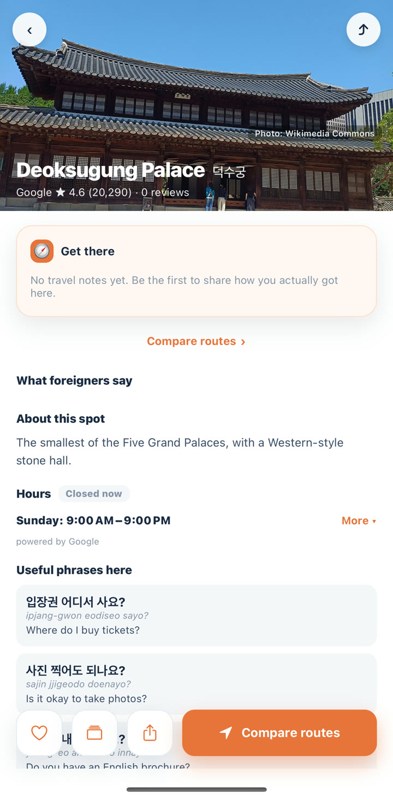
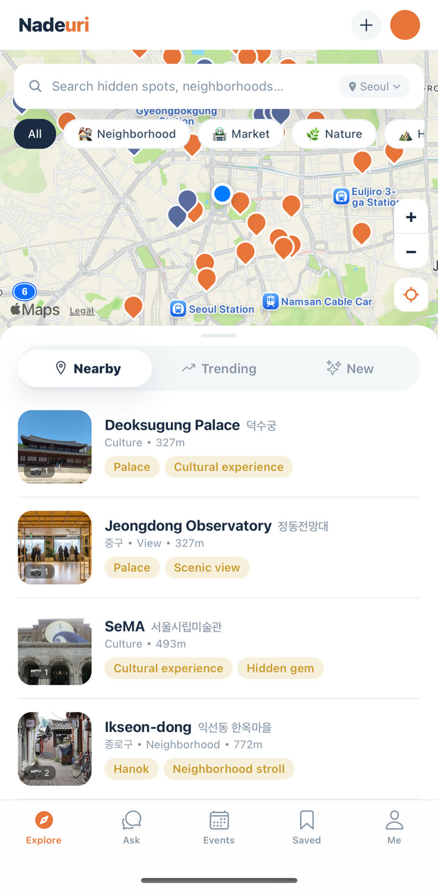
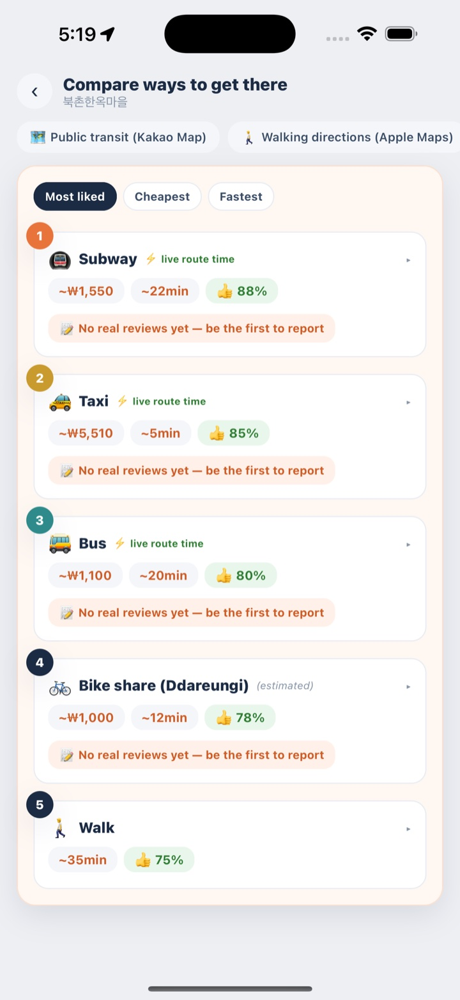
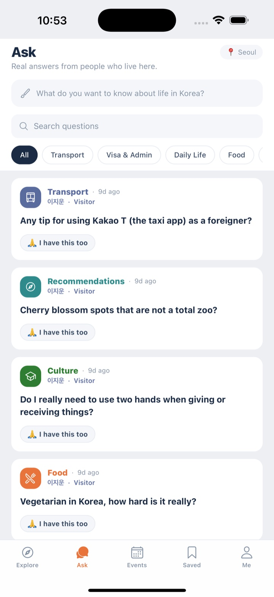

The Korea Google Maps can’t show you.
Hidden spots, real ways to get there, and answers from people who speak your language. Korea, finally readable.
구글맵이 못 보여주는 진짜 한국.
숨은 장소, 진짜 가는 법, 그리고 당신의 언어로 돌아오는 답변. 드디어 읽히는 한국.


Korea runs on Korean apps.
Google Maps can’t route a bus here; menus, reviews and directions live inside Korean-only services. So most visitors end up circling the same five landmarks — while the Korea locals actually love, the morning markets, stone-wall walks and neighborhood alleys, stays invisible.
We built Nadeuri because a language barrier shouldn’t decide what you get to experience.
한국의 일상은 한국어 앱 위에서 돌아갑니다.
구글맵으로는 버스 경로 하나 찾기 어렵고, 메뉴판도 후기도 길안내도 한국어 서비스 안에 있죠. 그래서 외국인은 똑같은 관광지 몇 곳만 돌게 되고 — 정작 현지인이 사랑하는 한국, 아침 시장과 성곽길 산책과 동네 골목은 보이지 않은 채 남습니다.
언어 장벽이 당신의 경험을 결정하게 두고 싶지 않아서, 나들이를 만들었습니다.
Why “Nadeuri”
왜 ‘나들이’인가
A light, casual outing — stepping out simply to enjoy the day. A walk, a market, a picnic by the river.
특별한 준비 없이 가볍게 집을 나서 바깥을 즐기는 일. 산책, 시장 구경, 강가의 소풍.
We didn’t want Korea to feel like a checklist tour. We wanted it to feel like a nadeuri — easy, familiar, yours. That’s the promise in the name: wherever you’re from, the everyday Korea within arm’s reach.
한국이 체크리스트 관광이 아니라 나들이처럼 느껴지길 바랐습니다 — 가볍고, 익숙하고, 내 것 같은. 이름에 그 약속을 담았어요. 어디에서 왔든, 일상의 한국이 팔 뻗으면 닿는 곳에 있도록.
“Make the everyday Korea — not just the famous one — reachable for people who don’t read Korean.”
“유명한 한국이 아니라 일상의 한국을, 한국어를 몰라도 닿을 수 있게.”
Five things Nadeuri does for you
나들이가 해주는 다섯 가지
Hidden spots, curated
숨은 스팟 지도
A map of places locals keep to themselves — quiet trails, markets, alleys — each with context: why it’s special, what it costs, how to blend in.
현지인만 알던 조용한 길·시장·골목을 큐레이션한 지도. 왜 특별한지, 비용은 얼마인지, 어떤 매너가 필요한지까지 함께.
Get there, compared
가는 법, 한눈에 비교
Subway, bus and taxi side by side with live times and fares — down to the fastest transfer car and door number.
지하철·버스·택시를 실시간 시간·요금으로 나란히. 빠른 환승 칸과 문 번호까지 안내해요.
A place, in one tap
장소 정보, 한 번의 탭
Photos, opening hours, ratings — and the Korean phrases to use right at the counter, with pronunciation.
사진·영업시간·평점 — 그리고 계산대에서 바로 쓰는 한국어 표현을 발음과 함께.
Ask people from your country
같은 나라 사람에게 질문
Visa, daily life, where locals actually eat — answered by residents and travelers from your own country, in your language.
비자·생활·현지인 맛집 — 같은 나라에서 온 거주자와 여행자가 당신의 언어로 답해요.
A living guide for Korea
한국 생활 가이드
ARC and banking, phones and internet, emergency numbers, etiquette and common scams — the survival manual, built in.
외국인등록·은행·휴대폰·인터넷·응급번호·에티켓·흔한 사기까지 — 서바이벌 매뉴얼을 앱 안에.
Real screens, real Seoul
실제 화면, 실제 서울


Korea, within arm’s reach.
한국을, 팔 뻗으면 닿는 곳에.
iOS first · Android next
iOS 먼저 출시 · Android는 다음
Policies
정책 문서
Privacy Policy
개인정보 처리방침
What we collect and your choices.
수집 항목과 이용자 권리.
Terms of Service
이용약관
The rules for using Nadeuri.
서비스 이용 규칙.
Community Guidelines
커뮤니티 가이드라인
How we keep it real and kind.
건강한 커뮤니티 원칙.
Support & contact
Need help, found a bug, or want to report content or request account deletion? Email us and we’ll get back to you.
Get in touch
- jicloud.studio@gmail.com
- Operator
- JicloudStudio (지클라우드스튜디오)
- Business reg. no.
- 575-14-02979
- Address
- Seoul, Republic of Korea
You can block and report any user or content directly in the app, and delete your account and all your data at any time from Settings.
지원 및 문의
도움이 필요하거나 오류를 발견했거나, 콘텐츠 신고·계정 삭제를 원하시면 이메일로 연락 주세요. 확인 후 답변드리겠습니다.
연락처
- 이메일
- jicloud.studio@gmail.com
- 운영자
- 지클라우드스튜디오(JicloudStudio)
- 사업자등록번호
- 575-14-02979
- 주소
- 서울특별시
앱에서 누구든/어떤 콘텐츠든 차단·신고할 수 있으며, 설정에서 언제든 계정과 모든 데이터를 삭제할 수 있습니다.